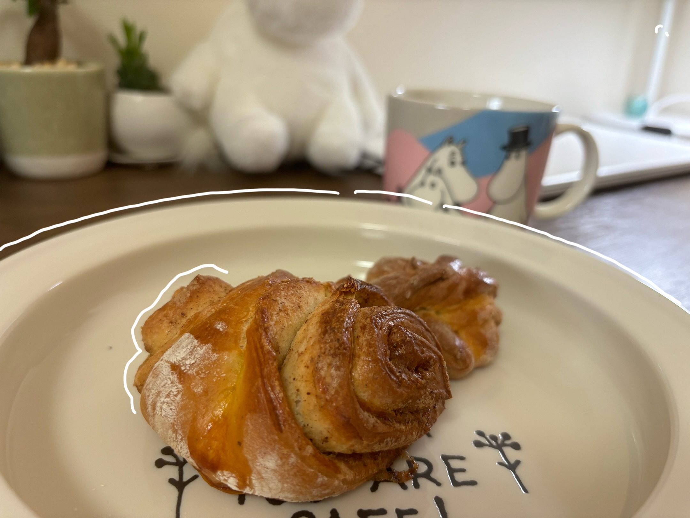

8月1日
シナモンロールをつくりました。
つくっているときから、シナモンとナツメグ（正しいレシピはカルダモンなんだけど近所のスーパーになくて代用）の香りがしてテンション爆上がり👆
フィンランド風シナモンロールのレシピだったので、食器はムーミンでそろえた～(=^・・^=)
今日は朝から、「帰ったらシナモンロールつくる！」と決めて出かけたから、外出中ず～っと楽しみでした。そうやってワクワクできる心の余白が、またうれしいですね。

シナモンロールをつくりました。
つくっているときから、シナモンとナツメグ（正しいレシピはカルダモンなんだけど近所のスーパーになくて代用）の香りがしてテンション爆上がり👆
フィンランド風シナモンロールのレシピだったので、食器はムーミンでそろえた～(=^・・^=)
今日は朝から、「帰ったらシナモンロールつくる！」と決めて出かけたから、外出中ず～っと楽しみでした。そうやってワクワクできる心の余白が、またうれしいですね。